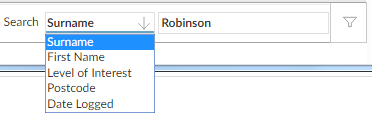

Searching and filtering
The Search field allows you to restrict the records shown based on the contents of a particular field.
To search for a record, set the drop down to the field you want to search by, then type the first few characters in the input field and apply the filter (press Return, click  , or press Ctrl+Shift+A).
, or press Ctrl+Shift+A).


Some browses give you one or more pre-defined filters that allow you to show only records with specified characteristics. Select the filter you want, and apply the filter (click , or press Ctrl+Shift+A).

NOTE
You can use additional characters in the Search input field to refine your search. However, this is likely to be slower than searches using the first few characters of the item.